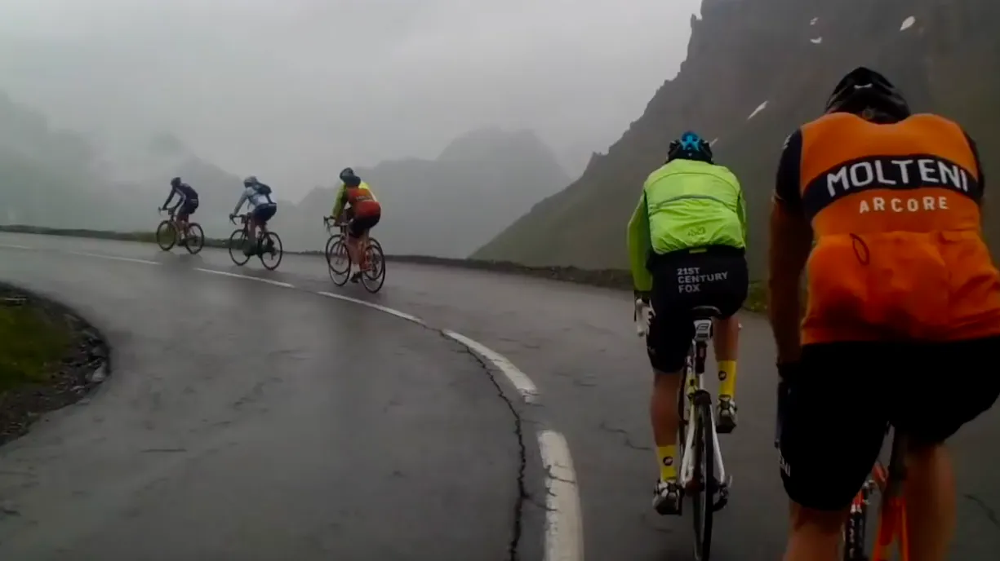
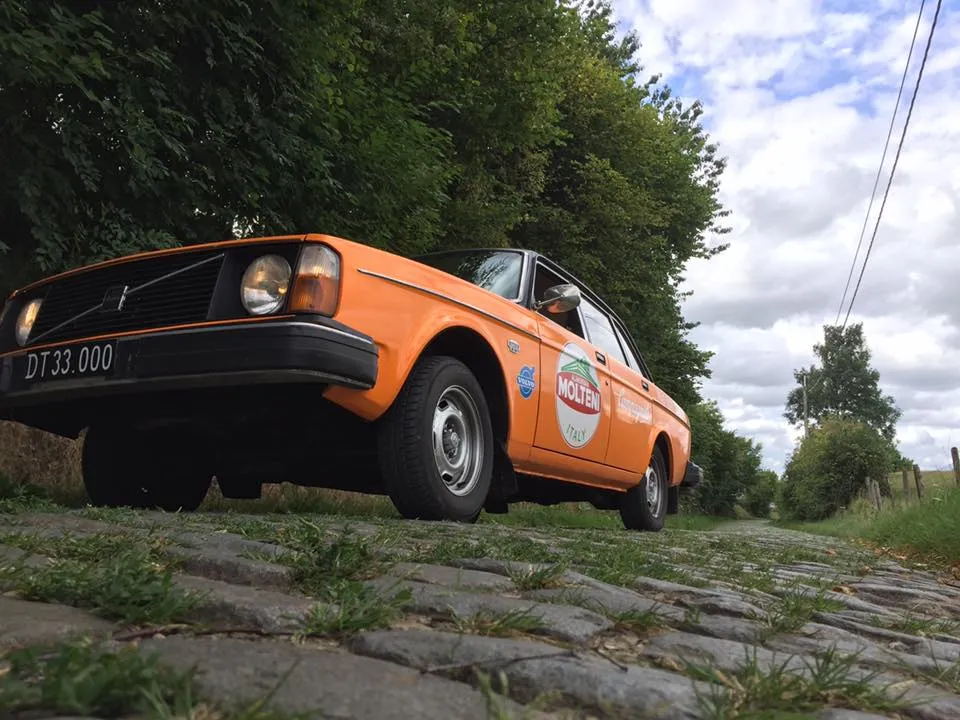

B R E A K I N G: Squadra Molteni hasteudtaget til PostNord Danmark Rundt

Jesper Worre har hasteudtaget Squadra Molteni til at køre 3. etape – og resten af etapeløbet PostNord Danmark Rundt. Løbsdirektør Worre vil have mindst ét hold med, som kan tåle at køre i regn og blæst.
2. etape af PostNord Danmark Rundt måtte i dag aflyses på grund af, at rytterne ikke ville køre i det dårligt danske sensommervejr. Efter først en del neutraliseret kørsel ville rytterne ikke mere – vendte om, og kørte tilbage til startbyen Svendborg.
– På grund af UCI’s Extreme Weather Protocol må vi køre neutraliseret kørsel. Og på et tidspunkt går der diskussionsklub i feltet, og til sidst vil de ikke køre mere, fordi vejret åbenbart er for dårligt, fortæller Jesper Worre.
Det er en situation som PostNord Danmark Rundt og Jesper Worre aldrig har oplevet før i løbets 26-årige historie.

– Det er ikke godt for løbet, at vi har ryttere og hold med, som ikke kan tåle at køre i regnvejr. Men vi bliver nød til at have et hold med, som kan tåle mosten – et hold, som kan køre i alt slags vejr. Derfor har jeg nu hasteudtager Squadra Molteni, oplyser Jesper Worre.
Squadra Molteni er klar
I Squadra Moltenis HQ kommer hasteudtagelsen på et lidt træls tidspunkt, men man tager det med vanlig jysk sindsro
– Løjtnant Kasper Sørensen og jeg er lige kommet hjem fra højdetræningslejr i Sierra Nevada og har 27.000 højdemeter i de lettere brugte ben. Supersprinter Grane Maaløe har været i Rostock for at køre vindtunnelforsøg i en hel uge, men vi piver ikke, og er selvfølgelig klar til at løfte opgaven. Og vi har ikke en Extreme Weather Protocol, fortæller holdkaptajn Niels Bjørnsteen. Vi stiller med 8 ryttere i morgen – og deres uldtrøjer skal nok nå at blive næsten tørre – efter dagens 5 timers træning i regnvejr,
Volvo 144, en tot twist og kaffefilter
Retroholdet ser frem til at skulle køre PostNord Danmark Rundt, selvom det var lidt udfordringer på logistiksiden.
– Ja, vores servicebil var ellers sendt på værksted. Den skulle lige have skiftet luftfilter. Og sådan et luftfilter til en Volvo 144, var altså i restordre. Vi prøvede at løse det med en tot twist og kaffefilter, men det gik ikke, fortæller sportsdirektør Klaus Maarup Kjærsgaard.
Men vi havde også på fornemmelsen, at det lakkede mod enden for den 144. Derfor er holdets nye 244 DL klar til at rulle afsted i morgen.
